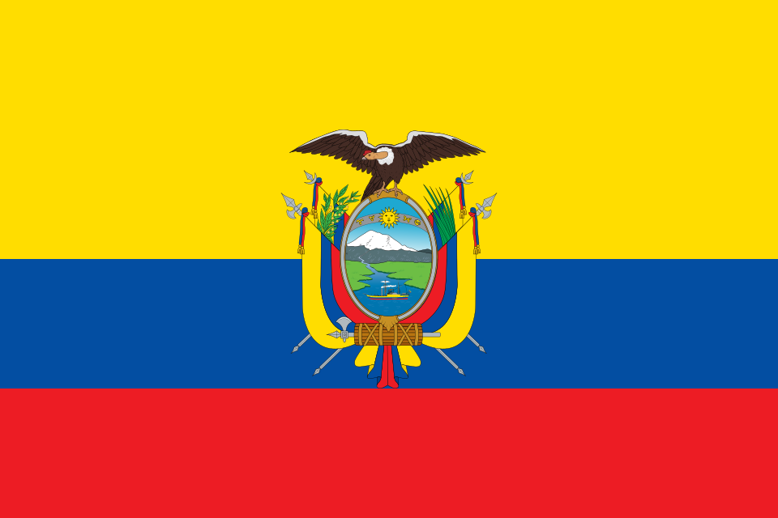

Manual de marca · 19 de agosto de 2026
Red Café Ecuador
Dos arcos con flecha girando alrededor de un grano. La bandera va aparte.
Logotipo
icono
monocromo
horizontal
Bandera — elemento aparte

oficial, con escudoRed CaféECUADOR en la cabecera
Tamaños mínimos
Paleta
| Uso | Color |
|---|
| Café — cabecera, pie, logotipo | #3B1A0C |
| Poso — héroe | #2A1207 |
| Acento sobre papel | #A94E17 |
| Acento sobre café | #D98E52 |
| Papel — fondo | #FBFAF7 |
| Tinta — texto | #14140F |
Reglas de uso
La bandera nunca va dentro del logotipo. Se coloca al lado, y se retira en cualquier soporte de un solo color: sello, bordado, grabado o documento en blanco y negro.
El escudo es el oficial. No se redibuja ni se simplifica: se usa el archivo tal cual. Por debajo de 24 px de alto se pierde, así que en esos tamaños la bandera se omite.
El monocromo usa currentColor: hereda el color del contexto y funciona en ambos sentidos sin duplicar archivo.